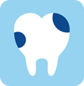
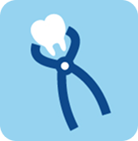
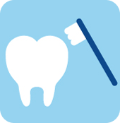

地域の皆様が安心して通える、
家族みんなのための歯科医院

コンセプト
当院は、小さなお子さまからご年配の方まで、どなたでも安心
して通える歯科クリニックを目指しています。単に「治療をす
る」のではなく、患者さんの不安を和らげ、笑顔で通えること
を大切にし、最新の設備とやさしい診療で家族みんなの健康な
歯を守れるようサポートしていきます。
コンセプト

一般診療
小児歯科

口腔外科

予防歯科
コンセプト
コンセプト
〒105-0001
東京都港区虎ノ門１丁目３−１
東京メトロ 虎ノ門駅より直結・徒歩1分
駐車場はないので、近隣のコインパーキングをご利用ください